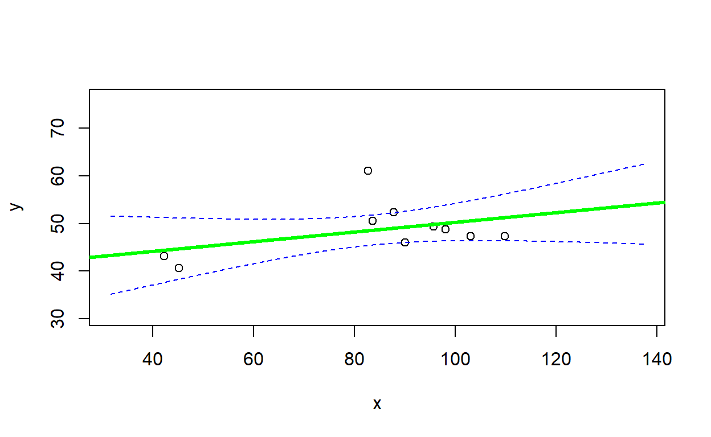
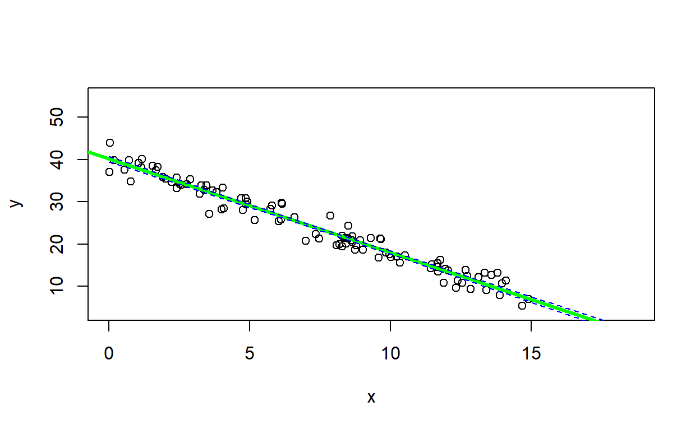
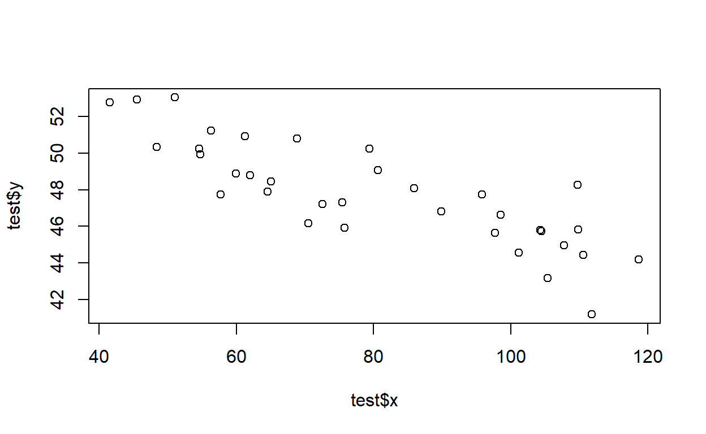
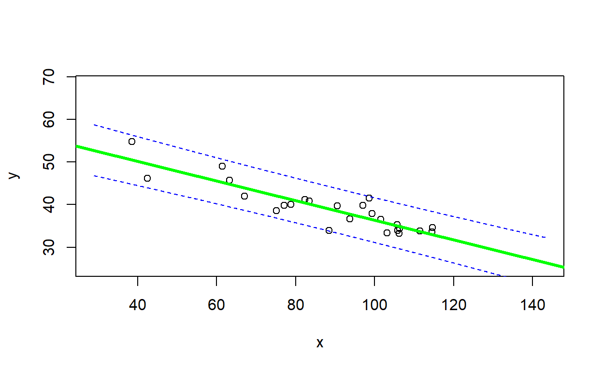
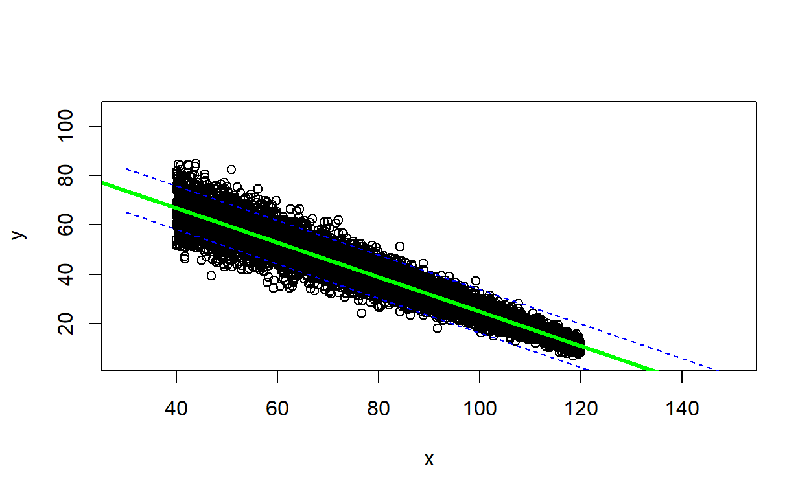

The Virtual Ecologist
As with all lab reports, your answers will either take the form of R functions or short written responses (submitted together in a Word document). The R functions should be stored in an R script file (‘.R’ extension). To allow me to evaluate your work more efficiently, please name your R script using the following convention: “[your first name]_[your last name]_lab2.R”. Please submit your script using our shared Nevada Box (‘NRES 746 lab’), in the folder titled ‘Lab 2 Submissions’; my submission would be “kevin_shoemaker_lab2.R”. Please answer all short-answer questions via Webcampus.
Please complete all assignments by the due date (Oct. 3). You can work in groups but please submit the materials individually.
When writing functions, it’s often easiest to start off by writing a script, and then when you have everything working properly, wrap the script into a function.
Don’t forget to test your functions! But also, remember that your submission should only contain your functions- not any ancillary code you may have used to develop and test your functions.
Please comment your code thoroughly. Don’t be afraid of for loops and inefficient coding practices, as long as it gets the job done!
And of course, be dangerous!
Student-led topics
If you haven’t already, please sign up for a topic on our shared Google sheets document
Simulating Data in R
First, review the basic approach to simulating data in the “Virtual Ecologist” lecture. Recall that a data simulation model can be constructed as a deterministic component (defining underlying relationships between the process of interest and a set of covariates), with a stochastic component wrapped around it (defining the “noise”, or “error” associated with each observation from the process of interest).
Exercise 2.1: model verification, part 1
Simulate data that meet the standard assumptions of univariate linear regression (homoskedasticity, normal/independent residual errors). Then run the “lm()” function on your simulated data and examine how closely the parameter estimates match the “true” parameter values.
You will find more detailed instructions on the next page!
Exercise 2.1a
Write a function called “LMDataSim()” for drawing a set of random observations from a data generating model that meets all the assumptions of ordinary linear regression. This function should be specified as follows:
- input (arguments):
- sample.size = a scalar (integer) specifying the number of observations to simulate
- xlimits = a vector of length 2 specifying the minimum and maximum
values of the covariate “x”
- coefs = a vector of length 2 specifying (in order) the intercept and
slope of the deterministic relationship defining the expected response
as a function of “x”.
- stdev = a scalar specifying the standard deviation of the residual errors (which we will assume are normally distributed).
- suggested algorithm:
- sample random values (size=“sample.size”) from a uniform
distribution (min and max defined by “xlimits”) to represent covariate
values (hint: use the “runif()” function)
- Use the linear model defined by the “coefs” variable ([response mean] = intercept + slope*[covariate value]) to determine the expected (mean) value of the response variable at each covariate value.
- Add “noise” to the expected values according to the “stdev” argument (use the “rnorm()” function)
- sample random values (size=“sample.size”) from a uniform
distribution (min and max defined by “xlimits”) to represent covariate
values (hint: use the “runif()” function)
- return:
- out = a data frame with number of rows equal to “sample.size”
(number of observations), and two columns:
- the first column, named ‘x’, should represent the values of the “x” variable
- the second column, named ‘y’, should represent the simulated values of the response variable (stochastic observations from the known model defined by “coefs” and “stdev”)
- out = a data frame with number of rows equal to “sample.size”
(number of observations), and two columns:
Include your function in your submitted r script! Remember to only submit the function, and not any of the code you used to test your function!
You can use this “sandbox” (below) test your function!
LMDataSim <- function(sample.size,xlimits,coefs,stdev){
# [add code here!]
}
#LMDataSim(sample.size=20,xlimits=c(40,120),coefs=c(5,0.3),stdev=1)Hint: No hints … yet!
Test your function- for example, using the following code:
LMDataSim(sample.size=10,xlimits=c(40,120),coefs=c(55,-0.09),stdev=6.8)temp <- LMDataSim(sample.size=500,xlimits=c(-2,10),coefs=c(10,-0.21),stdev=.1)
coef(lm(y~x,data=temp))[2]Exercise 2.1b
Write a function called “LMVerify_pt1()” for computing how well the coefficients and residual variance from R’s “lm()” function match the known coefficients of the model used to generate the data. This function should be specified as follows:
- input:
- sim.dataset = a data frame representing simulated data simulated
from a linear model with known coefficients (intercept and slope) and
known residual variance. The first column, labeled ‘x’, should represent
the values of the “x” variable and the second column, labeled ‘y’,
should represent stochastic observations from the known model
defined by “trueparams”. NOTE: the structure of this input argument
should match the output produced by your ‘LMDataSim’ function.
- trueparams = a vector of length 3 specifying the intercept, slope,
and standard deviation of the residual errors of the known relationship
between “x” and “y” in sim.dataset.
- plot = a logical (TRUE/FALSE) indicating whether or not to produce a plot with regression line and confidence interval
- sim.dataset = a data frame representing simulated data simulated
from a linear model with known coefficients (intercept and slope) and
known residual variance. The first column, labeled ‘x’, should represent
the values of the “x” variable and the second column, labeled ‘y’,
should represent stochastic observations from the known model
defined by “trueparams”. NOTE: the structure of this input argument
should match the output produced by your ‘LMDataSim’ function.
- suggested algorithm:
- Use the “lm()” function to estimate the coefficients and residual
error (standard deviation of residuals) of the fitted relationship
between column 1 (named ‘x’) and column 2 (named ‘y’) of “sim.dataset”
(regress y on x)
- Extract the regression coefficients (intercept and slope
parameter)
- Extract an estimate of the residual error (standard deviation of
residuals). Hint: extract the residuals from the ‘lm’ object and use the
‘sd’ function to compute the standard deviation of the residuals.
Alternatively, the model summary (produced by running the ‘lm’ model
object through the ‘summary’ function) has a list element called
‘sigma’. This is an estimate of the residual standard deviation.
- Store the fitted parameter values in a single vector object with the following order: intercept, slope, sd.
- Extract the regression coefficients (intercept and slope
parameter)
- [if plot==TRUE] Plot the estimated regression line (from the ‘lm’ function) with a 90% confidence interval around the estimated regression line (e.g., computed using the “predict()” function with interval=“confidence”). Overlay the true linear relationship (from the known data generating model defined by “trueparams”). Add a legend to your plot (e.g., using the ‘legend()’ function) to differentiate the true linear relationship from the estimated regression line.
- Use an “ifelse()” statement to record whether or not the 90% confidence interval around the slope parameter estimate (estimated from the data using ‘lm’; note that this is not the same as the confidence interval around the regression line- just focus on the confidence interval on the regression coefficient!) contains the “true” parameter value (if the 90% confidence interval contains the true value, then TRUE, otherwise FALSE). NOTE: you can use the ‘confint’ function to extract the confidence interval for the slope term.
- Use the “lm()” function to estimate the coefficients and residual
error (standard deviation of residuals) of the fitted relationship
between column 1 (named ‘x’) and column 2 (named ‘y’) of “sim.dataset”
(regress y on x)
- return:
- out = a list of length 3 with the following elements (with the names
indicated below):
- trueparams = a vector of length 3 representing (in order) the known
true parameters (intercept, slope, sd of residual error). This should be
an exact copy of the input parameter ‘trueparams’.
- fittedparams = a vector of length 3 representing the fitted
parameters (intercept, slope, sd of residual error) from the linear
regression model (coefficients obtained from running the ‘lm’
function)
- inside = a logical (TRUE/FALSE) representing whether or not the 90% confidence interval around the slope parameter (estimated from the data using the ‘lm’ function) contains the “true” parameter value.
- trueparams = a vector of length 3 representing (in order) the known
true parameters (intercept, slope, sd of residual error). This should be
an exact copy of the input parameter ‘trueparams’.
- out = a list of length 3 with the following elements (with the names
indicated below):
Include your function in your submitted r script!
You can use this “sandbox” (below) to test your function! Remember to only submit the function, and not any of the code you used to test your function!
#simdat <- LMDataSim(sample.size=1000,xlimits=c(0,10),coefs=c(0,1),stdev=1)
LMVerify_pt1 <- function(sim.dataset,trueparams,plot=TRUE){
# [add code here!]
}
#LMVerify_pt1(sim.dataset = simdat, trueparams = c(0,1,1),plot=FALSE)Hint: No hints … yet!
Test your function- for example, using the following code:
simdat <- LMDataSim(sample.size=10,xlimits=c(40,120),coefs=c(55,-0.09),stdev=6.8)
LMVerify_pt1(sim.dataset = simdat, trueparams = c(55,-0.09,6.8), plot=T)
## $trueparams
## [1] 55.00 -0.09 6.80
##
## $fittedparams
## intercept x stdev
## 62.7437460 -0.1636015 7.6972413
##
## $inside
## [1] TRUEsimdat2 <- LMDataSim(sample.size=100,xlimits=c(0,15),coefs=c(40,-2.2),stdev=1.8)
LMVerify_pt1(sim.dataset = simdat2, trueparams = c(40,-2.2,1.8), plot=T)
## $trueparams
## [1] 40.0 -2.2 1.8
##
## $fittedparams
## intercept x stdev
## 39.671334 -2.192114 1.988879
##
## $inside
## [1] TRUEAside: plotting confidence intervals
You can use the ‘predict’ function to compute confidence intervals and prediction intervals:
predict.lm(yourmodel, interval = c("confidence"), level = 0.95) # for confidence interval
predict.lm(yourmodel, interval = c("prediction"), level = 0.95) # for prediction intervalThe predict function allows you to predict a response (and estimate confidence intervals) for any arbitrary covariate values. To do this you need to add a “newdata” argument to the predict function. For example:
nd <- data.frame(x=seq(lb,ub,length=100)) # note that the predictor names need to match the predictor names in the model object!
predict.lm(yourmodel, newdata=nd, interval = c("confidence"), level = 0.95) # for confidence intervalNote that the prediction interval code may occasionally return some warnings- which you may safely ignore!
Exercise 2.1c.
Does the 90% confidence interval around the slope estimate (estimated from simulated data with a sample size of 10) contain the “true” slope parameter value 90% of the time? In your WebCampus submission, explain how you addressed this question. Did you need more than 100 simulated data sets to answer this question?
ASIDE: review of conditional statements in R
NOTE: The previous exercise requires the use of “conditional” statements. That is, if a condition is true, do something. If the condition is false, do something else. The syntax for doing this in R is:
if(TRUE){
do something
}else{
do something else
}
Let’s say I want to determine the number of vector elements that are cleanly divisible by 3. I could write the following code:
inputvector <- c(1:100) # vector of interest
div_by_three <- 0
for(i in 1:length(inputvector)){
if(i%%3==0){ # if there is zero remainder after dividing by three
div_by_three <- div_by_three+1 # then increment the storage variable
}
}
div_by_three## [1] 33An alternative way to do this would be to do use the “which()” function. This tells you which indices in a vector correspond to “TRUE” conditions.
For example,
which(c(FALSE,TRUE,TRUE,FALSE))## [1] 2 3Using “which”, we could re-write the above code to take up just one line!
div_by_three <- length(which(inputvector%%3==0))Exercise 2.2: model verification, part 2
How might your results from part 2.1 change if your data simulations DID NOT meet the assumptions of ordinary linear regression- e.g., if the variances were not homogeneous?
To test this, you are asked to write an R function to generate data that violates a basic assumption regarding the error distribution of standard linear regression. Specifically, your function should generate “heteroskedastic” data, such that the variance of the residuals depends on the magnitude of the response ‘y’. For this exercise, you’ll still need to specify a linear relationship (y=ax+b) between your response and predictor - the only difference is that the residual variance is no longer homogeneous. To accomplish this, you need to specify a linear relationship for the standard deviation of residual error as well- this linear relationship (sd=ay+b) will describe how the magnitude of the residual error changes across the range of your predictor variable.
Some other potential violations of standard assumptions we could also introduce into our data simulations if we wanted to:
- use a non-normal error distribution
- introduce temporal autocorrelation
- introduce other types of correlation structure among the
observations
- use a mixture of two error distributions
- use a non-linear functional form
Exercise 2.2a.
Write a function called “LMDataSim2()” for drawing a set of random observations from a defined linear relationship that meets all the assumptions of ordinary linear regression except for homoskedasticity. This function should be specified as follows:
- input:
- sample.size = an integer specifying the number of observations to simulate
- xlimits = a vector of length 2 specifying the minimum and maximum
values of the covariate “x”
- coefs = a vector of length 2 specifying (in order) the intercept and
slope of the relationship between “x” and the expected response
- sd_coefs = a vector of length 2 specifying (in order) coefficients for a model that specifies the standard deviation of the residuals (magnitude of residual error) as a linear function of the response value “y” (in this data generating model, the standard deviation of the residuals changes linearly with magnitude of the response)
- suggested algorithm:
- sample random values (size=“sample.size”) from a uniform
distribution (min and max defined by “xlimits”) to represent the
covariate (use the “runif()” function)
- Use the defined linear model (defined by “coefs”) to determine the expected value of the response.
- Use the defined linear model (defined by “sd_coefs”) to determine the expected value of the standard deviation of the response.
- Add “noise” to the expected values according to the “stdev” parameter (use the “rnorm()” function). Note that this should now depend on the magnitude of the expected response.
- sample random values (size=“sample.size”) from a uniform
distribution (min and max defined by “xlimits”) to represent the
covariate (use the “runif()” function)
- return:
- out = a data frame with number of rows equal to “sample.size”
(number of observations), and two columns:
- the first column, named ‘x’, should represent the values of the “x” variable
- the second column, named ‘y’, should represent the simulated values of the response variable (stochastic observations from the known model defined by “coefs” and “stdev”)
- out = a data frame with number of rows equal to “sample.size”
(number of observations), and two columns:
NOTE: make sure that your linear model for stdev does not go negative - this will return “NaN” values (not a number!).
Include your function in your submitted r script!
You can use this “sandbox” (below) to test your function!
LMDataSim2 <- function(sample.size,xlimits,coefs,sd_coefs){
# [add code here!]
}
#LMDataSim2(sample.size=1000,xlimits=c(0,10),coefs=c(0,0.5),sd_coefs=c(0,0.2))Hint: No hints … yet!
Test your function- for example, using the following code:
test <- LMDataSim2(sample.size=35,xlimits=c(40,120),coefs=c(55,-0.09),sd_coefs=c(-0.2,0.04))
plot(test$x,test$y)
Exercise 2.2b.
Write a function called “LMVerify_pt2()” for computing how well the coefficients from R’s “lm()” function match the known coefficients of the model used to generate the data. This function should be specified as follows:
- input:
- sim.dataset = a data frame representing data simulated from a linear
model with known coefficients (and known residual variance). The first
column, labeled ‘x’, should represent the values of the “x” variable and
the second column, labeled ‘y’, should represent stochastic observations
from the known model defined by “trueparams”. NOTE: the
structure of this input argument should match the output produced by
your ‘LMDataSim2’ function.
- trueparams = a vector of length 2 specifying the intercept and slope
of the known relationship between “x” and “y” [note: this time we don’t
include the true residual error, which varies with the magnitude of the
expected response]
- plot = a logical (TRUE/FALSE) indicating whether or not to produce a plot with regression line and confidence interval
- sim.dataset = a data frame representing data simulated from a linear
model with known coefficients (and known residual variance). The first
column, labeled ‘x’, should represent the values of the “x” variable and
the second column, labeled ‘y’, should represent stochastic observations
from the known model defined by “trueparams”. NOTE: the
structure of this input argument should match the output produced by
your ‘LMDataSim2’ function.
- suggested algorithm:
- Use the “lm()” function to estimate the coefficients of the fitted
relationship between column 1 (named ‘x’) and column 2 (named ‘y’) of
“sim.dataset” (regress y on x)
- Extract and store the regression coefficients (intercept and slope
parameter)
- Extract and store the regression coefficients (intercept and slope
parameter)
- [if plot==TRUE] Plot the estimated (fitted) regression line with a 95% prediction interval around the estimated regression line (e.g., computed using the “predict()” function with interval=‘prediction’). Overlay the observations from the known data generating model (i.e., from ‘sim.dataset’).
- Use an “ifelse()” statement to record whether or not the 95% confidence interval around the slope parameter estimate (estimated from the data) contains the “true” parameter value (if the 95% confidence interval contains the true value, then TRUE, otherwise FALSE). You can use the ‘confint()’ function to extract the confidence interval for the slope term. Again, note that you are only asked to evaluate whether the confidence interval for the slope term includes the true slope value- you are not asked to evaluate whether the confidence interval around the estimated regression line contains the true regression line (this is harder to do!).
- Use the “lm()” function to estimate the coefficients of the fitted
relationship between column 1 (named ‘x’) and column 2 (named ‘y’) of
“sim.dataset” (regress y on x)
- return:
- out = a list of length 3 with the following elements (with the names
indicated below):
- trueparams = a vector of length 2 representing (in order) the known
true parameters (intercept, slope). This should be an exact copy of the
input parameter ‘trueparams’.
- fittedparams = a vector of length 2 representing the fitted
parameters (intercept, slope) from the linear regression model
- inside = a logical (TRUE/FALSE) representing whether or not the 95% confidence interval around the slope parameter (estimated from the data using the ‘lm’ function) contains the “true” parameter value.
- trueparams = a vector of length 2 representing (in order) the known
true parameters (intercept, slope). This should be an exact copy of the
input parameter ‘trueparams’.
- out = a list of length 3 with the following elements (with the names
indicated below):
Include your function in your submitted r script!
You can use this “sandbox” (below) to test your function!
#simdat <- LMDataSim2(sample.size=1000,xlimits=c(0,10),coefs=c(0,0.5),sd_coefs=c(0,0.2))
LMVerify_pt2 <- function(sim.dataset,trueparams,plot=TRUE){
# [add code here!]
}
#LMVerify_pt2(sim.dataset = simdat, trueparams = c(0,0.5),plot=FALSE)Hint: No hints … yet!
Test your function- for example, using the following code:
simdat3 <- LMDataSim2(sample.size=25,xlimits=c(30,120),coefs=c(55,-0.19),sd_coefs=c(-1.4,0.11))
LMVerify_pt2(sim.dataset = simdat3, trueparams = c(55,-0.19),plot=T)
## $trueparams
## [1] 55.00 -0.19
##
## $fittedparams
## intercept x
## 51.2432440 -0.1506905
##
## $inside
## [1] TRUEExercise 2.2c.
In webcampus, please answer the following question:
Is the estimate of the slope parameter (obtained using the ‘lm()’ function) biased? [note: statistical bias of an estimator is the difference between the estimator’s expected value and the true value of the parameter being estimated]. Ideally, an estimator should be unbiased (bias=0). Briefly explain how you got your answer.
Exercise 2.2d.
In webcampus, please answer the following question:
Use the figure below to evaluate the goodness-of-fit of a linear regression model (green line with prediction interval visualized as blue lines) fitted to the data (open circles). See the code below for reference about how the figure was generated. In your Word document, please describe how this figure helps you to evaluate goodness-of-fit (i.e., could your observed data have been generated by the model?) Are there ‘red flags’ that might make you think that the linear regression model is not adequate for representing these data? Finally, describe one scenario where violation of the heteroskedasticity assumption in linear regression could lead to erroneous inference about a research question or hypothesis.
Here is an example of a goodness-of-fit visualization:
## Part 2
simdat_lots <- LMDataSim2(sample.size=10000,xlimits=c(40,120),coefs=c(95,-0.7),sd_coefs=c(0.3,0.1))
simdat_sample <- LMDataSim2(sample.size=10,xlimits=c(40,120),coefs=c(95,-0.7),sd_coefs=c(0.3,0.1))
temp <- LMVerify_pt2(sim.dataset = simdat_lots, trueparams = c(55,-0.09),plot=T)
Exercise 2.3: Power analysis!
Review the “power analysis” section of the Virtual Ecologist lecture, and complete the following exercises. Recall that we are designing a monitoring program for a population of an at-risk species, and we want to have at least a 75% chance of detecting a decline of 25% or more over a 25 year period. Let’s assume that we are using visual counts, and that the probability of encountering each organism visually is 2% per person-day. The most recent population estimate was 1000 (assume that we know that with certainty).
Exercise 2.3a
Develop a function called “GetPower()” that evaluates the statistical power to detect a decline under user-specified types of monitoring designs (e.g., varying numbers of observers, intervals between successive surveys). This function should be specified as follows:
- input:
- initabund: initial population abundance (default=1000)
- nreps: number of replicated long-term monitoring data sets to
generate in order to evaluate power
- trend: proportional change in population size each year
- years: duration of simulation (in years)
- days: survey duration, in days
- observers: number of survey participants each day of each survey
year
- survint: survey interval, in years (e.g., 2 means surveys are conducted every other year, 3 means surveys are conducted every 3 years)
- alpha: maximum acceptable type-I error rate – above which we would be reluctant to conclude that a population is declining.
- suggested algorithm:
- Up to you!!! You can make use of the functions from the “Virtual Ecologist” lecture.
- return:
- A single floating point (real number) value representing the statistical power to detect a decline under the specified default parameters and alpha level. This represents the percent of replicate data sets for which you correctly reject the null hypothesis of “no decline”.
Include your function in your submitted r script!
You can use this “sandbox” (below) to test your function!
GetPower <- function(initabund=1000,nreps=1000,trend=-0.03,years=25,days=3,observers=1,survint=2,alpha=0.05){
# [add code here!]
}
#GetPower(initabund=1000,nreps=1000,trend=-0.03,years=25,days=1,observers=1,survint=2,alpha=0.1)And we can test our new function using a command like this:
GetPower(survint=3) # test the new function, using mostly the default values
## or
GetPower(initabund=1000,nreps=1000,trend=-0.03,years=25,days=1,observers=1,survint=2,alpha=0.1)Exercise 2.3b.
In webcampus, please answer the following question:
For each variable element of the survey design (survey interval, number of observers, days per survey bout), evaluate how statistical power changes across a range of plausible values. Plot out these relationships. In webcampus, provide ONE of these plots, describe (briefly!) how you produced the plot, and how this information might help managers to develop effective survey protocols for this species.
Exercise 2.3c
Let’s factor in dollar amounts. Let’s assume each observer is paid $200 per day. In addition, let’s assume that the site is fairly remote and it costs $2000 to mount a field expedition (regardless of the number of field technicians). Can you identify a survey strategy to minimize cost while meeting the objective??? What is the optimal survey design in your opinion? Briefly describe how you arrived at this conclusion. [NOTE: don’t overthink this one- you don’t need to find the true optimal solution, just find a solution that meets the objective at relatively low cost and justify your answer!]
CONGRATULATIONS! You have reached the end of lab 2!